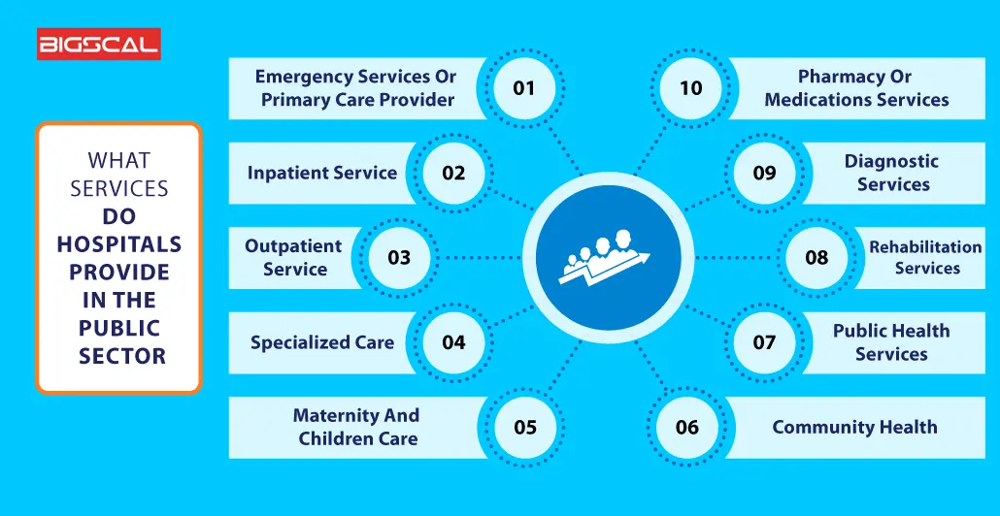

Hospital Services
Emergency Services
The urgency of emergency care that saves the life of a patient in the public hospitals is unparalleled to cases of heart attacks, accidents or injury. Aside from that, they re a widely utilized ambulatory care facility, where an individual is not only able to get medical hospital services or vaccinations but can also be treated for common illnesses. As a result, people in everybody age group within a community have such health services that even the most critical of emergency services are available to them.
Inpatient services at public hospitals are where patients are admitted for overnights or rounds of treatment and stay for a while. Patient services in hospital cover different categories of the health services, such as surgeries, post-operative care, chronic management through medication administration and others. Hospitals provide adjustable beds rooms and a specialized medical staff or a treatment from doctor other to ensure the visitations of people and their health being taken care of for the recovering period.
Store and Pharmacy
store and pharmacy services

A store and pharmacy within a hospital refers to the hospital pharmacy, which is a dedicated department responsible for procuring, storing, compounding, and dispensing medications to both inpatients and outpatients, essentially acting as the "store" for all medications within the hospital while also providing professional pharmaceutical services like drug information and consultation through pharmacists.
The hospital pharmacy is one of the key departments in hospitals that deals with procurement, storage, compounding, dispensing, manufacturing, testing, packaging, and distribution of drugs. The research in pharmaceutical science and education is also the responsibility of this department; it is carried out under professional and competent pharmacists.